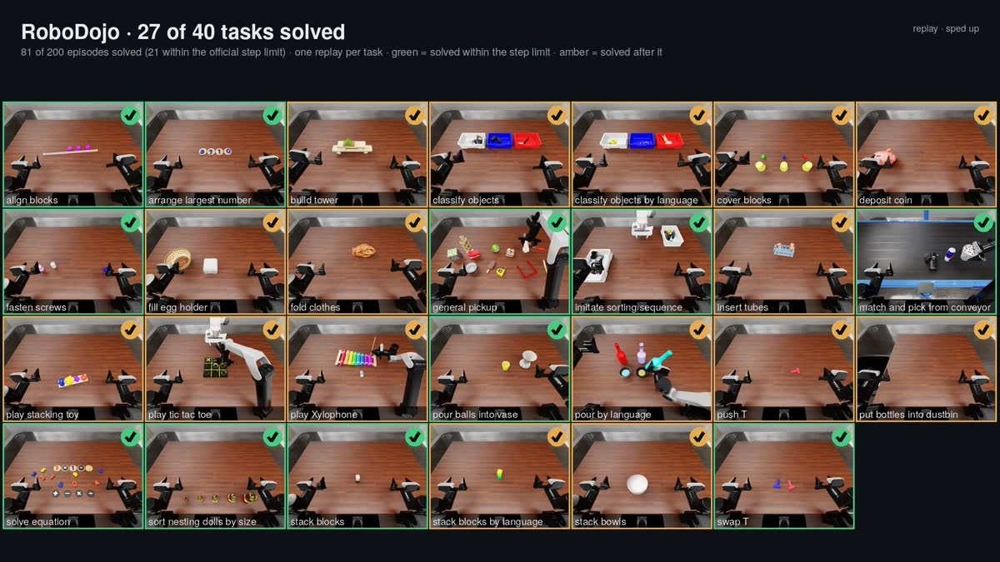
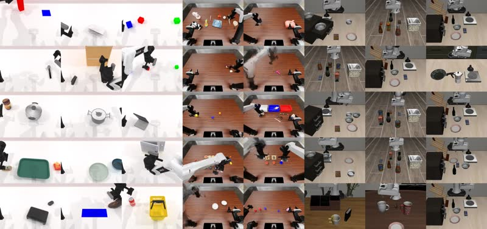

About
ORA is a harness for robot use
The model looks at the robot's cameras, reasons, and acts through tools or short programs. A supervisor admits every motion, one at a time, and answers it with a receipt. The model never sees the simulator's ground truth, and success comes only from each benchmark's own check. Every run is sealed and can be replayed.
The same agent core that runs the benchmarks also runs free play: load a scene, say what to do, and change your mind while the robot works.
From the blog
Frequent updates live here. Major releases also appear on the Hao AI Lab blog.

Open models can drive robots now. The interface decides how well.
The Pi agent core; code mode against tool calls on the same harness, and why tool calls fail on long tasks; other agent systems with the same model; and 40.4% of RoboDojo cases solved, counting successes after the step limit.

ORA: Open Robot-Use Agents
An open-weight model operating robots through perception and motion tools, with no VLA and no robot training: 69.2% of RoboTwin and 81.4% of LIBERO-Pro zero-shot, and what the harness does to get there.
Principles
Six commitments, each enforced by a mechanism in the code rather than by the prompt.
No robot training
No VLA, no demonstrations, no task memory. The same open model and the same harness on every benchmark.
The supervisor holds authority
One motion at a time, each admitted or refused and answered with a receipt. Privileged state is kept out by the tool layer, not by the prompt.
One way to move, everywhere
Inverse kinematics, collision-aware planning and path timing are one base shared by five simulators. A planned motion can be previewed before it runs.
Programs, not just calls
The model can write a program that measures, moves and checks its own work in one turn, in a sandbox that exposes only ORA's tools.
A coding agent whose device is a robot
Give instructions, interrupt, ask questions or change your mind while the robot moves, in the terminal or the browser.
Every number has a run behind it
Each request, action and receipt is hash-bound and sealed. Results link to runs you can open and replay.
Results so far
Self-hosted DeepSeek-V4.1-Flash, zero-shot, code mode, with each benchmark's own success check.
| Benchmark | Robot | Cases | Solved | Within the step limit |
|---|---|---|---|---|
| RoboTwin 2.0 (clean-to-randomized) | dual-arm ALOHA | 235 | 79.6% | 79.6% |
| LIBERO-Pro | Franka Panda | 800 | 87.5% | 87.5% |
| RoboLab (100 reviewed tasks) | DROID Franka | 500 | 79.2% | 67.0% |
| RoboDojo | dual-arm ARX X5 | 198 | 40.4% | 10.1% |
"Solved" counts successes reached after a benchmark's step limit; the last column does not. RoboDojo numbers follow ORA's protocol (it reads the measured jaw opening), so they are not leaderboard numbers. On RoboTwin, LIBERO-Pro and RoboLab the model can ask the benchmark whether the task is complete. Details are in blog no. 2.
Same model, same tasks
| Benchmark | Paired cases | ORA | Uni-Robot-Agent | Prompt tokens per success |
|---|---|---|---|---|
| RoboLab | 177 | 76.8% | 63.8% | 7.4M vs 53.3M |
| RoboDojo | 72 | 48.6% | 36.1% | 24.6M vs 156.7M |
Both systems on self-hosted DeepSeek-V4.1-Flash, no simulator step limit for either. ORA can query the task verdict on RoboLab and Uni-Robot-Agent cannot; RoboDojo, where neither can, is the like-for-like comparison.
Get started
Linux or macOS with Git and curl. The installer adds uv and Node.js 22 when they are missing and puts an ora command in ~/.local/bin.
curl -fsSL https://raw.githubusercontent.com/hao-ai-lab/ORA/main/scripts/install.sh | sh
ora providers key DEEPSEEK_LOW_API_KEY # or any OpenAI-compatible or Anthropic endpoint
ora play --env synthetic # no GPU: give a robot instructionsOne NVIDIA GPU with 32 GB runs LIBERO, RoboTwin and RoboDojo with the full tool set.
ora setup --env robodojo # simulator, assets, sandbox; about 100 GB
ora run --env robodojo --task general_pickup --confirm-launchThe installer address works once the public repository has its first release.
Cite
@article{ora2026,
title = {ORA: Open Robot-Use Agents},
author = {(to be added)},
journal= {arXiv preprint},
year = {2026}
}